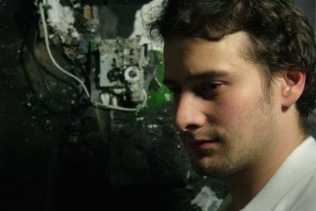

Mikoláš Janota
|  |
Mikoláš successfully defended his PhD dissertation entitled "SAT Solving in Interactive Configuration" on Friday, 28 May 2010. He is now a postdoc working with Ines Lynce at the Instituto Superior Técnico at Inescid in Lisbon. He started his PhD at UCD in January 2006 under the joint supervision of Dr. Joe Kiniry and Dr. Simon Dobson. He has M.Sc. in Theoretical Computer Science from Faculty of Mathematics and Physics at Charles University in Prague. Along with his studies he worked in industry for 3 years on systems for data collection and analysis for condition monitoring and maintenance. The experiences gained in professional development made him interested in techniques and methods that make the development more efficient and less error prone. He strongly believes that the common nowadays methodologies of software development do not exploit the full potential of formal methods. Therefore in his research he focuses on issues that could make application of formal methods more natural and beneficial. His interests during university studies included Mathematical Logic, Recursion Theory and Artificial Intelligence. In his master's thesis, written under the supervision of Prof. Petr Štěpánek, he focused on evaluation of existing systems for software verification. More information can be found on his home page. |